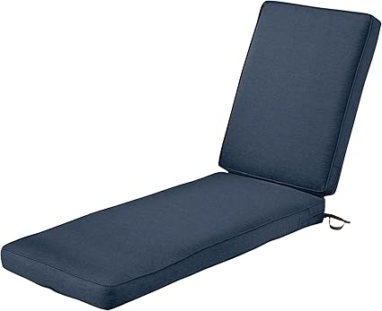

May 2026
We've spent serious time comparing outdoorseatingcushion. Some impressed us, some didn't, and a few genuinely surprised us.

→ Jordan Manufacturing — Highly reviewed

→ Pillow Perfect Outdoor — Editor's pick
→ Greendale Home Fashions — Top rated

→ Classic Accessories Montlake — Fan favorite
Waiting for the perfect deal — If you need outdoorseatingcushion now, buy now. A 10% discount in 3 months costs you 3 months of use.
Going with the cheapest option — Budget outdoorseatingcushion cut corners. Spending 20% more often gets something that lasts 3x longer.
Ignoring the fine print — Some outdoorseatingcushion listings look great until you realize key parts are sold separately.
Blind brand loyalty — Your favorite brand might not make the best outdoorseatingcushion. Stay open to better options.
The best outdoorseatingcushion is the one that fits your needs and budget. Our detailed comparisons on outdoorseatingcushion.com make that call easier.
Battery-powered outdoor equipment has crossed the performance threshold where it is the right choice for most homeowners. Modern 80V and 120V battery platforms from EGO, Greenworks, and Milwaukee match or exceed gas performance for chainsaws, snow blowers, and zero-turn mowers up to about 1 acre. The advantages: no fuel storage, no carb issues sitting over winter, quieter operation, and zero emissions. The disadvantage: runtime limitations and the cost of batteries if you are starting fresh on a platform.
Gas still wins for professional use, very large properties (2+ acres), and any application where continuous runtime is required without access to electricity. A commercial chainsaw for felling large trees, a large snow blower for long driveways in deep-snow regions, and professional zero-turn mowers for lawn care businesses are still gas territory. For the average homeowner, battery is the better choice in 2026.
Zero-turn mowers use independent wheel motors to turn on a zero-radius pivot, which dramatically speeds up mowing — especially around obstacles. They are faster, more maneuverable, and give a cleaner cut than traditional riding mowers. The tradeoff is they are harder to control on slopes (no steering wheel = less intuitive correction) and cost more. For flat or gently sloped yards over half an acre with trees or obstacles, a zero-turn will save you hours per month.
For light snowfall (under 8 inches) and a single-car driveway: a single-stage electric snow blower. For heavier snow or a two-car driveway: a two-stage gas or battery snow blower (21–24 inch clearing width). For long driveways or heavy snow regions: a three-stage or large two-stage machine. Single-stage blowers cannot handle wet, heavy snow well.
Every 2–3 tanks of fuel for regular use, or whenever you notice the saw pushing sawdust instead of chips, requiring extra force to cut, or cutting at an angle. A sharp chain cuts faster, safer, and with less wear on the bar and engine. A round file and guide rail make sharpening quick — 5 minutes per chain.
Under 1 acre: 42–46 inch deck. 1–2 acres: 48–54 inch deck. 2+ acres: 54–60 inch deck. Wider decks cut more per pass but are harder to maneuver in tight spaces. Match deck size to your property size and obstacle density.